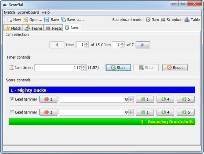

Jams Tab
The main window's Jams tab is used during a match to select the jam or heat being displayed in the scoreboard window, to control the jam timer, and to update the scores for each team.

Score5al's jam-editing tab
Jam selection
The controls at the top of the screen are used to select the jam to be displayed in the Jams panel. If the scoreboard window is in Jam Mode or Schedule mode, it is also affected by the jam selection controls in the Jams panel. During the match, the jam which is currently in progress should normally be the one which is selected.
Jam timer
During each jam, the timer should be started and stopped as the whistle is blown by the referee. This will show the time remaining in the centre of the scoreboard window when it is in Jam Mode. In the event of timeouts or any time adjustments which may occur, you can manually change the time remaining.
Note: for the purposes of match scoring, a jam is only considered to be completed if the jam timer has reached 0 seconds. Any jam with a non-zero value for the jam timer does not contribute to the teams' match scores. This allows Score5al to distinguish between a no-score draw and a jam which has not yet taken place.
Scoring
During the jam, the scores and lead jammer status for each team should be updated as events unfold on the track. There are quick buttons to add points in increments of 4 and 5, for when jammers pass complete packs at once. For the benefit of both players and spectators, it is recommended that points are updated immediately, rather than at the end of the jam.
A warning will be displayed if points have been awarded in a jam but the lead jammer status has not been set; this is to ensure that the LJ status is not accidentally left unset. If points have genuinely been awarded without either team gaining LJ status, this warning may be ignored.